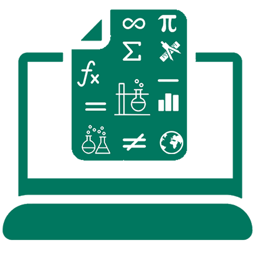

<div class="js-sans">

	<mat-toolbar class="fixedElement js-sans global-bg">

		<button mat-icon-button (click)="isExpanded = !isExpanded">
			<mat-icon *ngIf="!isExpanded">menu</mat-icon>
			<mat-icon *ngIf="isExpanded">menu_open</mat-icon>
		</button>

		<div class="mx-1">  </div>
		<div class="js-sans">Studyamaze</div>
		<div style="margin-left:auto"></div>

		<div class="my-auto">
			<p class="mb-0 mt-2 mini-text">Hi, {{ name }}</p>
		</div>
	
		<button mat-icon-button [matMenuTriggerFor]="menu" matTooltip="profile" matTooltipPosition="below" class="">
			<mat-icon>account_circle</mat-icon>
		</button>

	</mat-toolbar>

  <mat-menu #menu="matMenu">
    <button mat-menu-item (click)="logout()">
      <mat-icon>exit_to_app</mat-icon>
      <span>Logout</span>
    </button>
  </mat-menu>
	
	<div class="main-container">

		<mat-sidenav-container autosize>

			<mat-sidenav #sidenav fixedInViewport="true" [fixedTopGap]="64" mode="side" opened="true" [ngClass]=" isExpanded || isShowing ? 'full-wid' : 'half-wid' " (mouseenter)="mouseenter()" (mouseleave)="mouseleave()">
		        <mat-selection-list #shoes [multiple]="false" class="pt-0">
			        <mat-list-option class="js-sans" *ngFor="let navLink of sideNavData" [value]="navLink.name" [routerLink]="navLink.path" routerLinkActive="active">
						<mat-icon [ngStyle]="{'color': 'rgb(0, 119, 95)'}" mat-list-icon>{{ navLink.icon }}</mat-icon>
						<h6 *ngIf="isExpanded || isShowing">{{navLink.name}}</h6>
			        </mat-list-option>
		        </mat-selection-list>
			</mat-sidenav>
	
			<mat-sidenav-content>
	
				<section class="content-min-height py-3">
			        <router-outlet></router-outlet>
				</section>

			</mat-sidenav-content>

		</mat-sidenav-container>

	</div>

</div>
